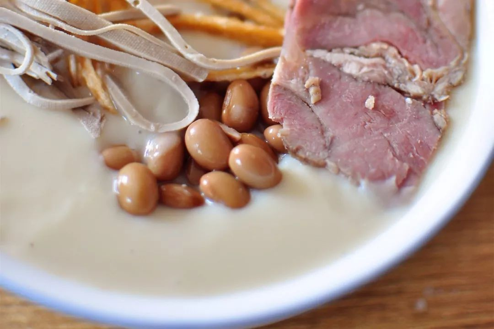
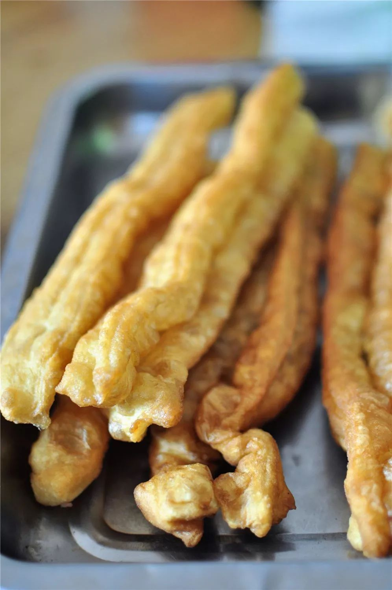
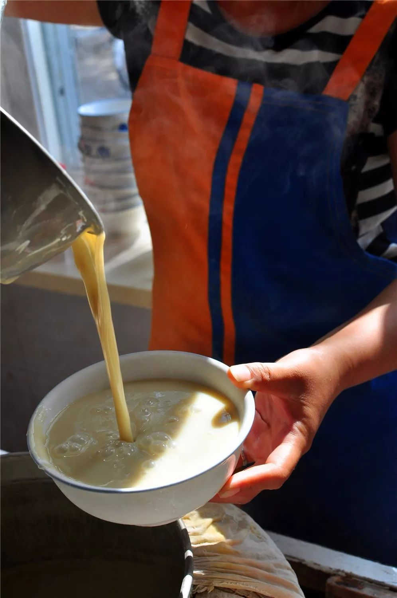
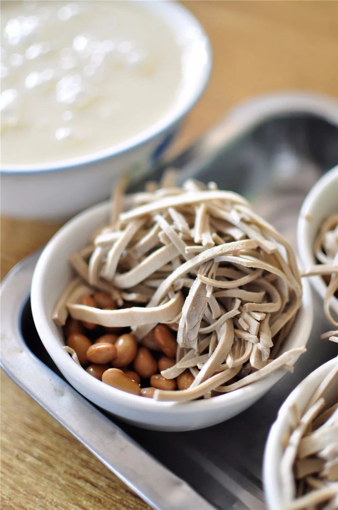
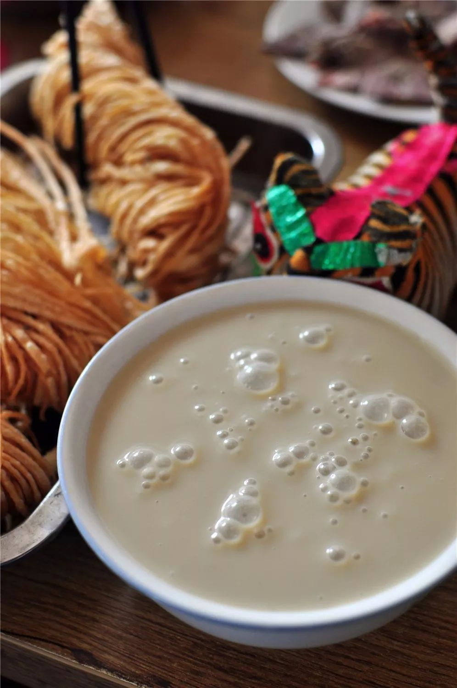

山东美食记：济宁的一碗故意熬糊却糊中透香的糊粥
发布时间: 2023-04-08 4859 次浏览
-
有一年仲夏，老虎作为美食顾问，带央视《味道》栏目拍摄京杭大运河山东段沿岸的美食，数百年来盛行于鲁西微山至济宁等运河两岸的糊粥，自然也是不能错过的。
济宁，老虎去过多次，拜祭过孔夫子，泛舟过微山湖，追寻过大运河，当然更少不了去看看众位梁山好汉。记忆中最难忘的一次是陪着台北的一批书法家到济宁拜孔子看汉碑，所谓“天下汉碑半济宁”，那些台北书法家的赞誉让老虎颇为济宁骄傲了一番。
天刚蒙蒙亮，起早，趁着晨曦的凉爽，当地一个朋友带老虎一行人到了济宁的一家店，招牌大字“粥泡羊肉”，却无“糊粥”之名，朋友告诉老虎，糊粥在济宁当地大家还称之为白粥，也简称为粥，而卖糊粥的店铺也直接就叫粥铺，而不是糊粥铺，所以在当地，一提喝“粥”去，说的就是糊粥。
原来如此。店不算大，但人却熙熙攘攘的多，每个人面前都摆着一个盛满糊粥的大碗，还有一些油条馓子之类的吃食，喝得不亦悦乎，一个三四岁的孩子，也被母亲带来，乖乖地坐在桌前，自己用小勺子，小心翼翼的喝着，看到我们在拍她，羞涩地笑，很是可爱。
朋友很是豪爽好客，按照当地的吃法要了满满一桌子，糊粥端至眼前，观之，色淡黄中泛着奶白，莹润细腻，呈半凝固态状，很是浓稠，还带着舀粥时泛起的一串串气泡，好似像大珠小珠落玉盘般的感觉，嗅之，一股米香豆香扑鼻而来，而且这次前来，老虎才知道喝糊粥要配豆腐丝和煮好的五香黄豆，奢侈一些的可以泡上切好的羊肉，这样味道会更为浓郁。
朋友说，喝糊粥的标配是撒子或者油条，油条自不必说，若是把撒子掰碎了泡在粥中，馓子酥脆而糊粥浓稠，稍待片刻，馓子在糊粥中略略变软，内里依旧是酥脆的，更为好吃。老虎依言在糊粥中加上豆腐丝，五香黄豆，泡上几片羊肉，再把馓子掰成小段泡上，略微搅拌，尝尝，糊粥果然有一种独特的糊香味，是米豆清香甘甜中微带苦味的感觉，糊粥的细糯滑爽，豆腐丝的微咸，加上煮黄豆的五香，还有羊肉的肉香以及馓子的油香，混合在一起，实在是香，让老虎一行人稀里呼噜吃的甚是欢畅。
将金灿灿的小米，用清水泡软，用“豆腐磨”磨成米糊，或用筛箩或用笼布，过滤一遍，篦去米渣，盛到盆里，略略静置，圆鼓鼓的黄豆，也是一样的过程，用清水泡的胖胖的，磨浆过滤，生炉火架大锅，先把豆浆熬煮沸腾，撇去浮沫，再将米糊倒入，不停地搅拌，并不时地一勺勺地把粥扬起来熬煮，有一个说法叫“打起来、开三开，在开两开，就出锅”，而这时候就要注意火候了，与锅底接触的粥要略微糊锅，但又不能糊焦过火，这样才能有糊香味儿却不是糊焦味儿，要的就是那股“糊”中透香的煳味，这样闻起来香，喝起来爽，且极其养胃。
黄河文化旅游宣传平台
联系电话: 17753010787
版权所有：山东大学技术团队
技术支持：山东大学技术团队